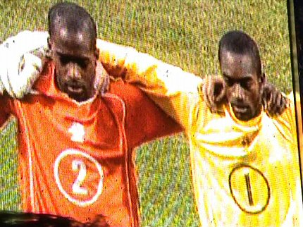

|
Nederland - Japan (U20) (2-1) 10 juni 2005 |
Nederland - Japan (U20) (2-1) 10 juni 2005
Ex-trainer Wiljan Vloet kwam ook naar Nederland - Japan kijken.
Supporters uit Japan.
Deze blije gasten uit Benin gaven een percussie-showtje. Hun land
speelde
met 1-1 gelijk tegen Australië.
Het bier werd geserveerd in kartonnen bekers. Een halve haan
kostte 3 euro.
De oranje-zee op zuid. "We will, we will rock you".
Sfeerimpressie vanuit oost naast het videoscherm, normaal het
gastenvak.
De Japanners zaten verspreid door het hele stadion. Op de
bovenste rij van
het Rodarakkers-vak zaten de meesten.
De openingsceremonie die een halfuur duurde speelde zich
grotendeels af
rond een enorm oranje doek dat een tulp moest uitbeelden. Verder was er
onder meer de Nachtwacht, acrobatiek, percussie- en zangwerk, vlagvertoon
en vele ballonnen.
High-tech gouden wezens deden acrobatische hoogstandjes.
De "Nachtwacht".
De artiesten op het veld vormen de letters FIFA terwijl jongelui
langs het
veld rennen met de vlaggen van alle deelnemende landen.
Klassieke muziek schalt door het stadion en het zangduo
Van Wegberg/Kockelkorn zingt "Alle Menschen sollen Brüder sein".
Dan gaat de grote voebal open waaruit duizenden ballonnen
opstijgen.
Er volgen enkele toespraken van bobo's zoals van Blatter de
FIFA-president.
Dan komen de spelers het veld op.
De volksliederen worden gespeeld door een harmonie-orkest.
Deze Japanse mevrouw zingt goed mee.
Het Wilhelmus weerklinkt.

De spelers tijdens het volkslied via het video-scherm.
Al in de 7e minuut scoort Nederland. De maker is Afellay.
Vrije trap van Vlaar die op de Japanse muur afketst en vervolgens
voor de
voeten van Drost komt die de bal echter niet onder controle krijgt.
Owusu Abeyie troeft vier Japanners af.
Vervolgens een scherpe voorzet net voorbij de doelman...
... maar wel nog binnen bereik van de snel inkomende Babel die er
2-0 van
maakt, (18').
Een monsterscore zit er dik in.
Oranje U20 bereidt zich voor op een Japanse hoekschop.
De pauze en een groot deel van de eerste helft gaan op met het
wachten op
een bier. Nadat horden kinderen een colaatje en een doos popcorn hebben
bemachtigd gaat de tap opeens toe. Verderop loopt er gelukkig nog een
kraantje met gerstenat. De tweede helft wordt bekeken vanaf de noordoost-hoek.
De volgepakte oost-tribune.
Spanning bij deze supportsters van "Nippon". Wat verraadt hun
gezichten?
Een goal! Hirayama scoort in de 68e minuut: 2-1.
Nederland zakt flink terug in de tweede helft die veel minder
sprankelend is.
Het blijft echter 2-1 en de spelers bedanken het vrolijke publiek.
Na afloop is het nog aardig gezellig in de KickOff. Hier de
presentatie van
Madelon, nu nog in oranje maar binnenkort als Roda-girl in de vertrouwde
huis-kleuren.
Ook in de KickOff nu fatsoenlijke halve liters.

De vriendin van Roger K. reist binnenkort naar Zweden maar zal
bij terugkeer
deze site opvrolijken als Rodameëdsje. Welcome to the Pleasure Dome !!
De zaak stroomt leeg en de laatste koempels doen als vanouds de
lamp uit.